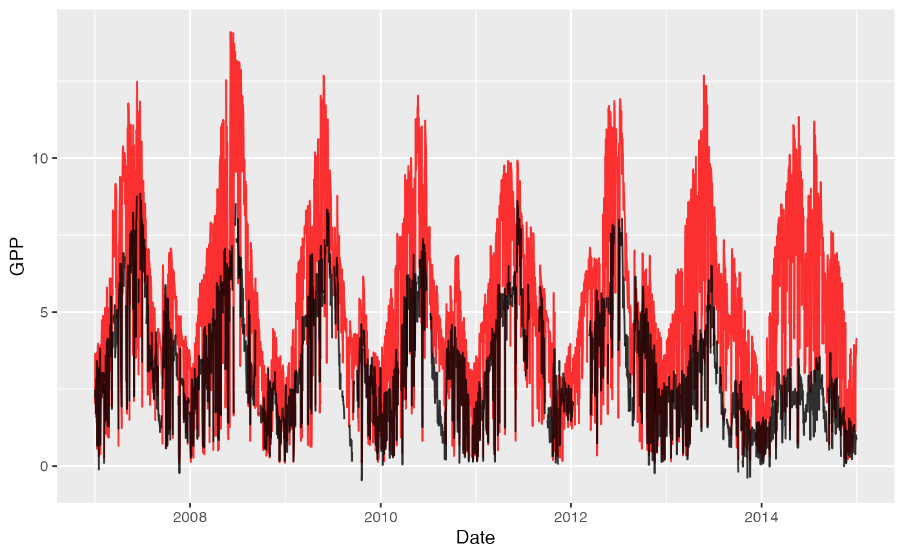
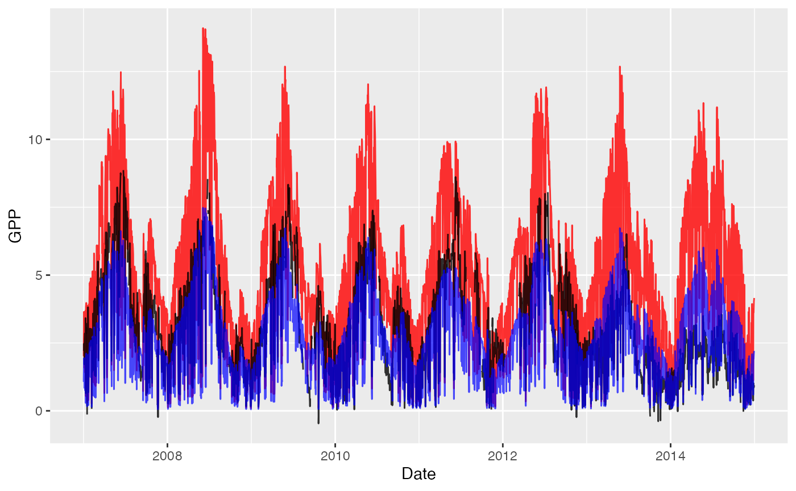

The rsofun package and framework includes two main models. The pmodel and lm3-ppa (which in part relies on pmodel compents). Here we give a short example on how to run the pmodel on the included demo datasets to familiarize yourself with both the data structure and the outputs.
The package includes two demo datasets to run and validate pmodel output. These files can be directly loaded into your workspace by typing:
library(rsofun)
p_model_drivers
#> # A tibble: 1 × 5
#> sitename forcing params_siml site_info params_soil
#> <chr> <list> <list> <list> <list>
#> 1 FR-Pue <tibble [2,920 × 15]> <tibble [1 × 18]> <tibble [1 × 12]> <tibble [2…
p_model_validation
#> # A tibble: 1 × 2
#> # Groups: sitename [1]
#> sitename data
#> <chr> <list>
#> 1 FR-Pue <tibble [2,920 × 3]>These are real data from the French FR-Pue fluxnet site. We can use these data to run the model, together with observations of GPP we can also parameterize pmodel parameters.
With all data prepared we can run the model using runread_pmodel_f(). This function takes the nested data structure and runs the model site by site, returning nested model output results matching the input drivers.
# optimized parameters from previous
# work
params_modl <- list(
kphio = 0.09423773,
soilm_par_a = 0.33349283,
soilm_par_b = 1.45602286,
tau_acclim_tempstress = 10,
par_shape_tempstress = 0.0
)
# run the model for these parameters
output <- rsofun::runread_pmodel_f(
p_model_drivers,
par = params_modl
)We can now visualize both the model output and the measured values together.
library(dplyr)
library(tidyr)
library(ggplot2)
# we only have one site so we'll unnest
# the main model output
model_data <- output %>%
filter(sitename == "FR-Pue") %>%
tidyr::unnest(data)
validation_data <- p_model_validation %>%
tidyr::unnest(data)
ggplot() +
geom_line(
data = model_data,
aes(
date,
gpp
),
colour = "red"
) +
geom_line(
data = validation_data,
aes(
date,
gpp
)
) +
labs(
x = "Date",
y = "GPP"
)
To optimize new parameters based upon driver data and a validation dataset we must first specify an optimization strategy and settings, as well as parameter ranges.
settings <- list(
method = "bayesiantools",
targetvars = c("gpp"),
timescale = list(targets_obs = "y"),
metric = cost_rmse_kphio,
dir_results = "./",
name = "ORG",
control = list(
sampler = "DEzs",
settings = list(
burnin = 1000,
iterations = 5000
)
),
par = list(
kphio = list(lower=0.04, upper=0.1, init = 0.05),
a = list(lower=0, upper=5, init = 3.5),
b = list(lower=1, upper=5, init=3.5),
tau = list(lower=0, upper=15, init=1),
shape = list(lower=0, upper=0.1, init=0)
)
)By default rsofun supports both optimization using the GenSA and BayesianTools packages. The above statement provides settings for a BayesianTools approach using the DEza sampler. For this example the burnin and iterations are kept artificially low. In a real scenario you will have to increase these values orders of magnitude. Keep in mind that optimization routines rely on a cost function, which, depending on its structure influences parameter selection. A limited set of cost functions is provided all starting with cost_* but the model structure is transparent and custom cost functions can be easily written.
In addition starting values and ranges are provided for the free parameters in the model. Free parameters include, kphio, a, b, tau and shape. Be mindful that with newer version of rsofun additional parameters might be introduced, so re-check vignettes and model descriptions when updating existing code.
With all settings defined the optimization function calib_sofun() can be called with driver data and observations specified.
# calibrate the model and
# optimize free parameters
pars <- calib_sofun(
drivers = p_model_drivers,
obs = p_model_validation,
settings = settings
)When successful the optimized parameters can be used to run subsequent modelling efforts, in this case slightly improving the model fit over a more global parameter set.
# reformatting the parameter list
params_modl <- list(
kphio = pars$par[1],
soilm_par_a = pars$par[2],
soilm_par_b = pars$par[3],
tau_acclim_tempstress = pars$par[4],
par_shape_tempstress = pars$par[5]
)
# run the model for these parameters
output_new <- rsofun::runread_pmodel_f(
p_model_drivers,
par = params_modl
)
# we only have one site so we'll unnest
# the main model output
model_data_new <- output_new %>%
filter(sitename == "FR-Pue") %>%
tidyr::unnest(data)
ggplot() +
geom_line(
data = model_data,
aes(
date,
gpp
),
colour = "blue",
alpha = 0.3
) +
geom_line(
data = validation_data,
aes(
date,
gpp
)
) +
geom_line(
data = model_data_new,
aes(
date,
gpp
),
colour = "red"
) +
labs(
x = "Date",
y = "GPP"
)
# validation_data %>%
# rename(obs = gpp) %>%
# left_join(
# model_data_new %>%
# dplyr::select(sitename, date, mod = gpp),
# by = c("sitename", "date")
# ) %>%
# rbeni::analyse_modobs2("mod", "obs", type = "hex")For details on the optimization settings we refer to the manuals of GenSA and BayesianTools.